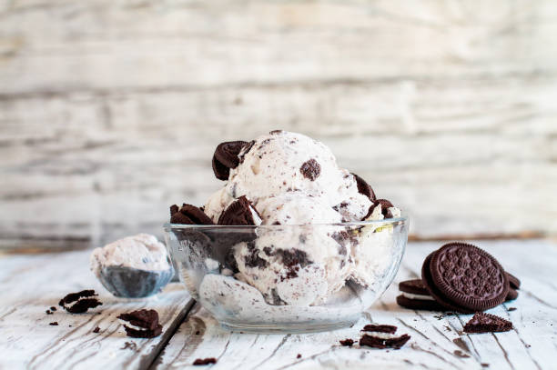

Cookies and cream (or cookies 'n cream) is a variety of ice cream, milkshake and other desserts that includes chocolate sandwich cookies, with the most popular version containing hand or pre-crumbled cookies from Nabisco's Oreo brand under a licensing agreement. Cookies and cream ice cream generally mixes in crumbled chocolate sandwich cookies into vanilla ice cream, though variations exist which might instead use chocolate, coffee or mint ice cream.
INGREDIENTS
for 8 servings
2 cups heavy cream(480 mL)
14 oz condensed milk(395 mL), 1 can
12 chocolate sandwich cookies, crumbled, additional cookies for topping if desired
Preparation
a large bowl, add the cream and condensed milk, then whip until soft peaks form.
Add the cookies and gently fold to combine.
Transfer mixture to a baking pan. Top with additional cookies if desired, then freeze for 3-4 hours.
Enjoy!
